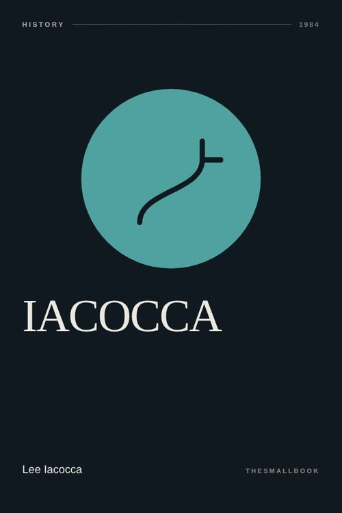

Library › Authors › Lee Iacocca
Books by Lee Iacocca
Lee Iacocca has one book in the library. Every book here is read down to the big idea, the lessons, the lines worth keeping and the actions worth taking. Start with the summary, then buy the full book if it earns a place on your shelf.

Iacocca: An Autobiography
1984 · 11 min · 8 lessons
Lee Iacocca's memoir: product genius at Ford (Mustang), the politics of his firing, and the turnaround of Chrysler with government loans, wage sacrifices and the minivan.
Iacocca's life splits into two acts. Act one, Ford: he rose through sales (the '56 for '56 financing campaign), proved himself a product man (the 1964 Mustang, built from leftover Falcon parts, priced for youth, a sensation), then was fired by Henry Ford II in 1978 despite record profits, a personal and political annihilation he recounts with rare candor. Act two, Chrysler: he arrived to a near-dead company, negotiated $1.5 billion in federal loan guarantees (a firestorm of criticism), froze his own salary at a...
Lessons in the summary
- Product Sense Is Betting on the Customer You Can Name
- Power Fights You Even When You're Winning
- Ask for Help Before the Obituary Is Written
- Leadership Credibility Is Measured in Your Own Paycheck
- Say No to Dead Weight Fast, in Public
- Steal the Rejected Idea from the Giant
- Sell the Company's Soul in Plain Language
- Patriotism Is a Business Argument When Jobs Are the Product
Lines worth keeping
- Motivation is everything. You can do the work of two people, but you can't be two people.
- In the end, all business operations can be reduced to three words: people, product, and profits.
- The trick is to make sure you don't die waiting for prosperity to come.
Questions Lee Iacocca helps answer
Read nearby authors next
- Bill Bryson 2 books
- David Grann 2 books
- Isabel Wilkerson 2 books
- Ramachandra Guha 2 books
- Siddhartha Mukherjee 2 books
- Walter Isaacson 2 books
- William Dalrymple 2 books
- A.L. Basham 1 book